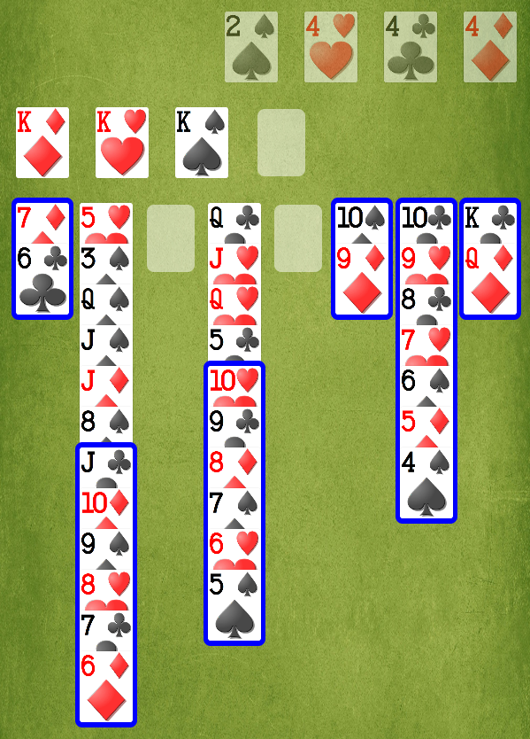

Most of the time, the maximum number of cards in a sequence that can be moved from one Column to another is the number of empty Freecells plus one.
However, when empty Columns exist, this number may increase dramatically, allowing you to make a supermove. Each empty Column (other than the Column you are moving to) basically doubles the maximum movable sequence size from what it would be based on the number of Freecells alone!

For example, in the above layout, you can move the entire marked sequence in Column 2 — black J-10-9-8-7-6 — onto the red Queen in Column 8.
Why? Because the empty Columns can be used as staging areas for entire subsequences of cards. There is one empty Freecell, so we can move two cards at a time:
Two cards (7-6) from Column 2 into the empty Column 3.
Two cards (9-8) from Column 2 into the empty Column 5.
Two cards (J-10) from Column 2 onto the Queen in Column 8.
Two cards (9-8) from Column 5 onto the 10 in Column 8.
Two cards (7-6) from Column 3 onto the 8 in Column 8.
In fact, with one empty Freecell and two empty Columns, we could move as many as eight cards in sequence from one Column to another!
Because of supermoves, emptying at least one Column is an important part of the basic strategy for playing FreeCell.
(Supermoves are similar, but not identical, to the Tower of Hanoi technique.)